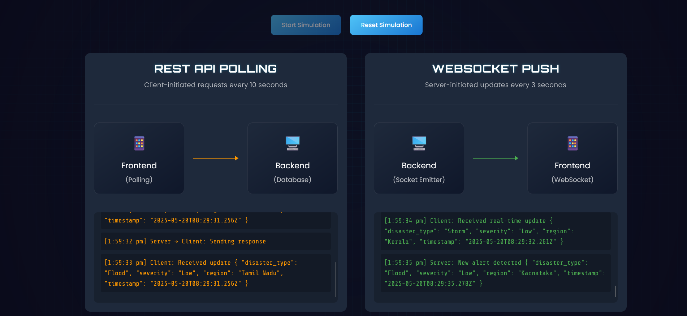

Project Gallery
IoT Sensor Deployment
Field installation of environmental sensors in disaster-prone zones.

WebSocket
Websocket simulation for data communication-simulation.

Graph-Networks
Graph travesing of data where nodes are componenets.
Graph-theory & Predictive models
Machine learning models for credibility and anomaly detection.
Live-Feed Dashboard
Displays live feed data and source along with social media interaction. Also provides summary.
IoT-Live data Dashboard
Displays live feed data of iot readings, battery level and condition.
Analytics Dashboard
Displays live analytics in form of charts.
Map Visual
Displays live geographic locations of the event.